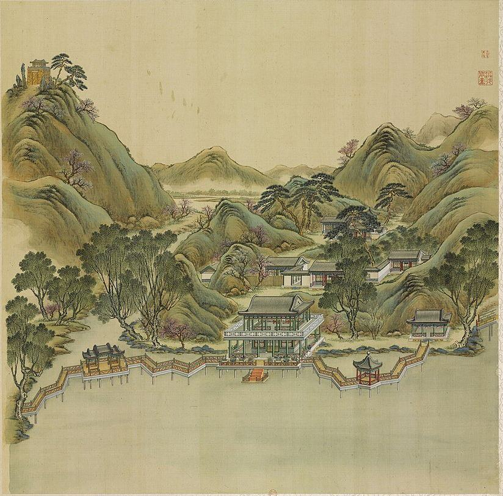

圆明园The Old Summer Palace before October 1860
We are rebuilding the Qing emperors' garden palace as a map and a 3D model you can walk through in the browser, as it stood before October 1860.


Three gardens, one residence: a model built from evidence.
The palace north-west of Beijing was made up of three gardens: 圆明园 Yuanming Yuan, "Garden of Perfect Brightness"; 长春园 Changchun Yuan, "Garden of Eternal Spring"; and 绮春园 Qichun Yuan, "Garden of Elegant Spring".
Building began under the Kangxi Emperor in the early 1700s, and the Yongzheng and Qianlong Emperors enlarged it. From Qianlong on it was the main imperial residence, where the emperors handled state affairs. The Forbidden City was used for formal ceremonies.
Most of it was Chinese: halls, lakes and hills arranged as scenes. Along the back of Changchun Yuan stood a small group of European-style palaces, 西洋楼 Xiyang Lou, begun in 1747, designed by the Jesuit Giuseppe Castiglione, with fountains by Michel Benoist.
What you see here is reconstructed, not surveyed. Every building carries its sources and a grade, A, B or C, and where the evidence runs out we guess and say so.

Why just before October 1860.
We rebuild the gardens as they stood in the last years of the Xianfeng reign, just before their destruction. The album of 1744 and the copperplates of the 1780s count for that state wherever nothing later contradicts them.
Our base is a large Qing plan of the gardens that draws every hall by its bays, in a state of the Daoguang and Xianfeng reigns. It gives the positions and footprints; the paintings, engravings, texts and digs give the rest.
- 1707–09The Kangxi Emperor grants the land to Prince Yinzhen, the later Yongzheng Emperor.
- 1725Yongzheng builds the audience hall and offices on the south side.
- 1744The Forty Scenes are named and painted.
- 1747Work begins on the European palaces in Changchun Yuan.
- 1770–74Qichun Yuan joins the gardens.
- 1855The last dated addition we have found: the theatre of 同道堂 Tongdao Tang.
The gardens, as painted and as we will picture them.
The first pictures are period evidence: leaves of the 1744 album and the copperplates of the 1780s. The empty frames after them wait for AI pictures made from our 3D model. Each one will say that it is an AI picture.
Engraved and painted while the gardens stood.

海晏堂 Haiyan Tang, the west front
Plate 10 of the twenty copperplate views of the European palaces. The double stair of the west front embraces the basin of the water clock. Our model of it, built in Round 14, is fitted to this plate.
Yi Lantai, 1786. Palace Museum, Beijing, via Wikimedia Commons, public domain. Credit
Period evidence Album leaf, 1744
Album leaf, 1744
武陵春色 Wuling Chunse, "Spring Colours of Wuling"
Leaf 14 of the Forty Scenes: a peach-blossom valley among hills, after the old tale of the hidden village.
唐岱 Tang Dai and 沈源 Shen Yuan, 1744. Source gallica.bnf.fr / BnF. Credit
Period evidence Copperplate, 1783-86
Copperplate, 1783-86
谐奇趣 Xieqiqu from the south
Plate 1 of the copperplates. Our first detailed model, of Round 13, is fitted to this plate and to five photographs of the ruin taken in 1873.
Yi Lantai, 1786. Palace Museum, Beijing, via Wikimedia Commons, public domain. Credit
Period evidenceA day in the gardens, from our model.
home-gate-morning · 16:9The gate court in the morning
The gate court in the morning
From 大宫门 Da Gongmen across the inner court to 正大光明 Zhengda Guangming, the audience hall, as our model of Round 19 sets them out.
Picture to comehome-fuhai-dawn · 4:5Fuhai at dawn
福海 Fuhai at dawn
Mist on the Sea of Blessings, with 蓬岛瑶台 Pengdao Yaotai on its islets.
Picture to comehome-haiyantang-afternoon · 16:9Haiyan Tang's court, afternoon
The court of 海晏堂 Haiyan Tang, an afternoon
The west front and the basin of the water clock in low sun, from our model of Round 14.
Picture to comehome-dashuifa-playing · 16:9The Great Fountain playing
大水法 Dashuifa, the Great Fountain, playing
The niche, the seven water steps and the two towers of jets, from our model of Round 15.
Picture to comehome-lantern-night · 4:5A lantern night
A lantern night
Lanterns along a covered way at the Lantern Festival, as the court paintings of the festival show it.
Picture to comehome-snow-halls · 16:9Snow on the halls
Snow on the halls
The grey rolled roofs of 九洲清晏 Jiuzhou Qingyan, the emperor's island, under snow, from our model of Round 18.
Picture to comeUnrolled like a handscroll.
home-aerial-overview · 3:4
The three gardens
From high in the south-west.
home-aerial-axis · 3:4
The axis
From the gate to the Back Lake.
home-aerial-fuhai · 3:4
福海 Fuhai
The Sea of Blessings and its islets.
home-aerial-xiyanglou · 3:4
西洋楼 Xiyang Lou
The European palaces in their strip.
home-surroundings · 9:16
Beyond the walls
Camps, villages and the Western Hills.
Scroll sideways · AI renders to come
Our model, held against the copperplate.
Drag the divider. On the left, our 3D model of 大水法 Dashuifa, the Great Fountain, seen through the camera we fitted to plate 15, with the plate's taller heights allowed for. On the right, the plate itself. The engraver idealised, and our model guesses where nothing survives: across the plate the fit is 1.42 m (root mean square), worst where the plate shortens the court.


Left: our model, screenshot from the camera fitted to the plate. Right: 大水法正面, plate 15 of the copperplates, Yi Lantai, 1786, Palace Museum, Beijing, via Wikimedia Commons, public domain. Credit
October 1860.
During the Second Opium War, British and French troops looted the palace and British troops burned it.
- 6 OctoberFrench and British troops captured the palace.
- 7–9 OctoberBoth armies looted it. The Forty Scenes album was among what was taken; it is now in the Bibliothèque nationale de France.
- 18–19 OctoberLord Elgin, the British High Commissioner, ordered its destruction, in retaliation for the torture and execution of prisoners held by the Qing. British troops under General Sir James Hope Grant burned most of it. The French commander refused to take part.
Today the site is a public park in Haidian District. The ruins of the European-style palaces are its most prominent remains, and lakes and waterways in the eastern half have been dug out and refilled.
西洋楼 Xiyang Lou, what the ruins hold.
The ruins that everyone knows from the Old Summer Palace are these: a strip of European-style palaces and fountains, built for the Qianlong Emperor from 1747 with Jesuit designers and Chinese craftsmen. We have gone through them building by building: the engravings, the photographs of the ruins then and now, what is known of their sizes, what survives and where the fragments are.

Halls, lakes and hills, one scene at a time.
Outside the European palaces, the gardens were Chinese halls and courts set round lakes and hills. For each scene and compound we have gathered what the album of 1744, the Qing texts and plans, the excavations and today's site say about it, and what is known of its size, so that it can be modelled.
 Leaf 1 · 1744
Leaf 1 · 1744正大光明 Zhengda Guangming
The audience hall on the south axis.
Read the dossier Leaf 3 · 1744
Leaf 3 · 1744九洲清晏 Jiuzhou Qingyan
The emperor's apartments on the island by the Back Lake.
Read the dossier Leaf 13 · 1744
Leaf 13 · 1744万方安和 Wanfang Anhe
A hall built in the lake on the plan of the character 卍.
Read the dossier Leaf 17 · 1744
Leaf 17 · 1744鸿慈永祜 Hongci Yonghu
The ancestral temple, 安佑宫 Anyou Gong.
Read the dossier Leaf 20 · 1744
Leaf 20 · 1744澹泊宁静 Danbo Ningjing
Paddies all round, and a hall on the plan of the character 田.
Read the dossier Leaf 32 · 1744
Leaf 32 · 1744蓬岛瑶台 Pengdao Yaotai
The islets in the middle of 福海 Fuhai.
Read the dossierLeaves of the Forty Scenes album, 1744, by 唐岱 Tang Dai and 沈源 Shen Yuan. Source gallica.bnf.fr / BnF. Credit
Not an empty plain: gardens, camps, villages.
The gardens stood among other imperial gardens, the camps of the banner guard, the market town of 海淀 Haidian, villages and rice fields fed by the springs of the Jade Spring hills. We have gathered what the Qing texts, the accounts of 1860 and the old maps say about that ring, and put a first, labelled version of it round the gardens in the 3D view. Most of it is inferred, and the page says how sure each part is.

Every building traced to a source.
Qing site plans give positions and footprints. The Forty Scenes album and the Xiyang Lou engravings of the 1780s give forms, roofs, trees and bridges. Today's lakes, islands and hills tie the old plans to the ground.
Every feature carries its source and a grade. Where the evidence runs out we guess, and say so.
- AShown on a source made while the gardens stood, or measured on remains that survive unchanged.
- BA later source: photographs of the ruins, 20th-century surveys, modern scholarly reconstructions, or a written description only.
- CInferred from typology or symmetry. Every guess is a C.
Do you have a photograph, a plan, a text?
Most halls are still drawn from their class, not from their own evidence. A photograph, a plan or a text that gives a size can turn a guess into a graded fact.
To do: the contact address for this project is not set yet.